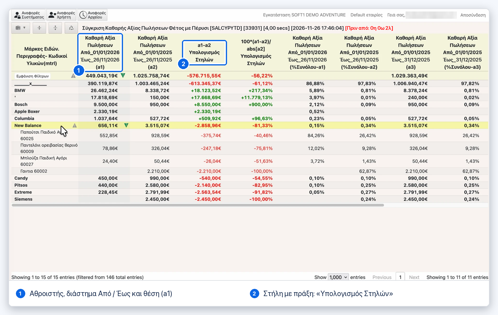

Βασικές έννοιες: διαστάσεις, αθροιστές, περίοδοι, φίλτρα
Οι τέσσερις έννοιες πάνω στις οποίες στηρίζεται κάθε αναφορά του MARS, με απλά παραδείγματα από την καθημερινότητα μιας εμπορικής εταιρείας.
Η αναφορά ως πίνακας#
Κάθε αναφορά του MARS είναι ένας πίνακας:
- Οι γραμμές είναι οι διαστάσεις: για ποιον ή για τι μιλάμε (πελάτες, είδη, πωλητές).
- Οι στήλες είναι οι αθροιστές: τι μετράμε (αξία πωλήσεων, ποσότητα), ο καθένας για μια περίοδο.
- Τα φίλτρα περιορίζουν τι μπαίνει στον υπολογισμό.
| Πελάτης (διάσταση) | Καθαρή Αξία Πωλήσεων φέτος (αθροιστής + περίοδος) | Καθαρή Αξία Πωλήσεων πέρυσι (ίδιος αθροιστής, άλλη περίοδος) |
|---|---|---|
| Πελάτης Α | 12.000 | 10.000 |
| Πελάτης Β | 8.500 | 9.200 |
| Σύνολα | 20.500 | 19.200 |
1. Διαστάσεις#
Η διάσταση είναι ο τρόπος που ομαδοποιούνται τα δεδομένα. Αν διαλέξετε τη διάσταση των πελατών, κάθε γραμμή είναι ένας πελάτης. Αν διαλέξετε την εμπορική κατηγορία ειδών, κάθε γραμμή είναι μια κατηγορία.
Μια αναφορά έχει:
- Διάσταση 1 (υποχρεωτική): η κύρια ομαδοποίηση.
- Διάσταση 2 (προαιρετική): μια δεύτερη ανάλυση μέσα σε κάθε γραμμή της πρώτης.
Παράδειγμα: Διάσταση 1 = πωλητής, Διάσταση 2 = πελάτες. Βλέπετε κάθε πωλητή και, αν πατήσετε πάνω του, τους πελάτες του.
Παραδείγματα διαστάσεων: «Επωνυμίες-ΑΦΜ Συναλ_νων», «Εμπορικές Κατηγορίες Ειδών», «Πωλητής (Salesman) (Γραμμής)», «Ομάδες Ειδών». Υπάρχουν περίπου 290 διαστάσεις ανάλυσης και περίπου 530 φίλτρα, σε κατηγορίες όπως Πελάτες, Προμηθευτές, Αποθήκη, Στοιχεία Παραστατικών, Ημερομηνιακές διαστάσεις (Ετος, Τρίμηνο, Μήνας, Εβδομάδα, Ημέρα) και Λογαριασμοί Γενικής Λογιστικής.
2. Αθροιστές#
Ο αθροιστής είναι το νούμερο που υπολογίζεται για κάθε γραμμή: αξία, ποσότητα, κέρδος κ.λπ. Παράδειγμα: «Καθαρή Αξία Πωλήσεων».
- Σε μια αναφορά βάζετε έως 10 αθροιστές. Στην οθόνη λέγονται a1, a2, … a9, a0.
- Μπορείτε να βάλετε τον ίδιο αθροιστή δύο φορές με διαφορετική περίοδο (π.χ. φέτος και πέρυσι).
- Βλέπετε μόνο τους αθροιστές που σας έχει επιτρέψει ο διαχειριστής.
Εκτός από τους απλούς, υπάρχουν και ειδικοί αθροιστές: Θέση (κατάταξη), Ποσοστό επί του συνόλου, Προοδευτικό άθροισμα, Προοδευτική ποσοστιαία συμμετοχή (Pareto).
3. Περίοδοι (χρονικά διαστήματα)#
Κάθε αθροιστής έχει δική του περίοδο, με Από και Έως. Έτσι, στην ίδια αναφορά έχετε φέτος, πέρυσι και τον προηγούμενο μήνα δίπλα δίπλα.
Τρεις τρόποι να ορίσετε το Από και το Έως:
- Δυναμική περίοδος από λίστα, π.χ. «Εναρξη Ετους», «Σήμερα», «Λήξη Ετους». Ενημερώνεται μόνη της κάθε μέρα.
- Δυναμική περίοδος + «Πριν από έτη». Η ίδια περίοδος, πριν από 1, 2 ή περισσότερα χρόνια. Έτσι στήνεται το «πέρυσι σαν σήμερα».
- Σταθερή ημερομηνία (κουμπί Επιλογή ημερομηνίας), π.χ. 01/01/2026. Δεν αλλάζει.
Οριακή ημερομηνία: αν τη συμπληρώσετε, όλες οι δυναμικές περίοδοι υπολογίζονται σαν «σήμερα» να ήταν εκείνη η μέρα. Έτσι ξανατρέχετε μια αναφορά όπως θα έβγαινε στο τέλος του προηγούμενου μήνα.
4. Φίλτρα#
Το φίλτρο περιορίζει τα δεδομένα που μετράνε. Διαλέγετε ποιο φίλτρο (π.χ. Ομάδες Ειδών) και ποιες τιμές (π.χ. δύο συγκεκριμένες ομάδες).
Το ιδιαίτερο στο MARS: κάθε φίλτρο το εφαρμόζετε σε όποιες στήλες θέλετε. Μια στήλη μπορεί να δείχνει όλες τις πωλήσεις και η διπλανή μόνο μιας κατηγορίας, στην ίδια αναφορά.
Υπάρχουν επίσης:
- Αριθμητικά φίλτρα στα αποτελέσματα: «από» και «έως» για κάθε στήλη (κουμπί Εμφάνιση Φίλτρων) (π.χ. μόνο πελάτες με τζίρο πάνω από 1.000).
- Συνθήκη γραμμών στις ρυθμίσεις: π.χ. «δείξε μόνο όσους πούλησαν φέτος περισσότερα από πέρυσι».
- Αυτόματα φίλτρα δικαιωμάτων που ορίζει ο διαχειριστής. Π.χ. ένας πωλητής βλέπει μόνο τις δικές του πωλήσεις, χωρίς να κάνει τίποτα.
5. Στήλες#
Οι στήλες είναι αυτό που εμφανίζεται στην αναφορά. Συνήθως κάθε στήλη δείχνει έναν αθροιστή (π.χ. a1). Μπορεί όμως να δείχνει και πράξη ανάμεσα σε αθροιστές: π.χ. τη διαφορά φέτος μείον πέρυσι (a1-a2). Κάθε αναφορά έχει έως 10 στήλες.
